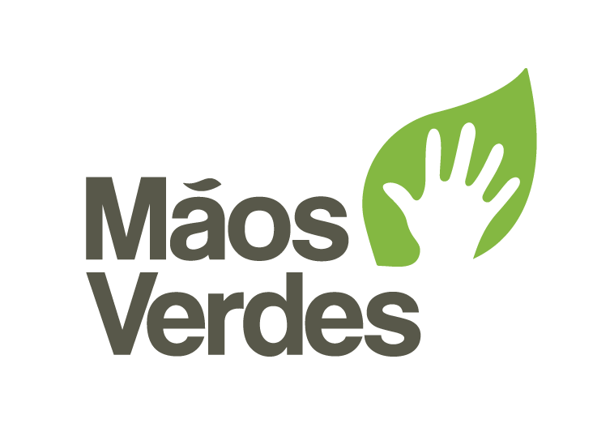
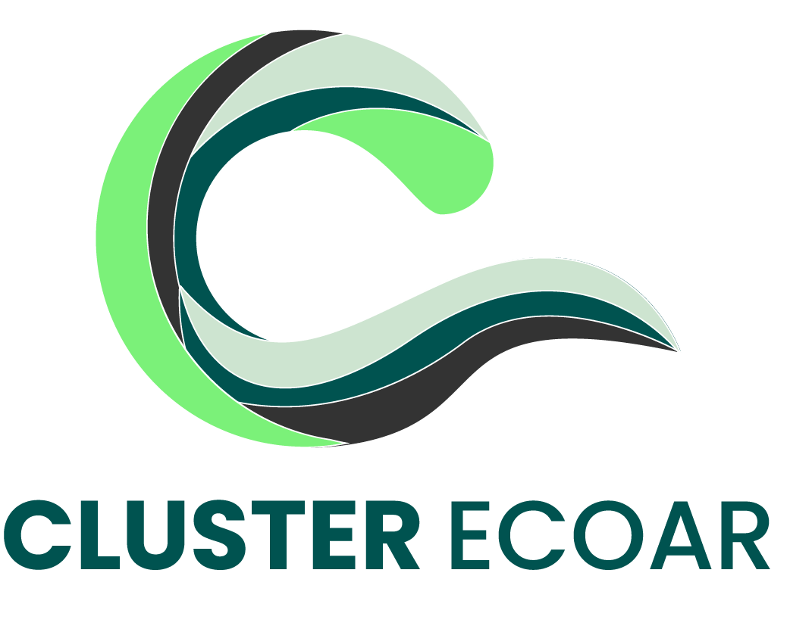
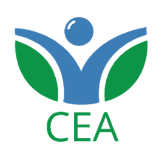

Sobre o NSRU
Mãos Verdes
Contribui com experiência em educação ambiental, organização comunitária
e gestão de projetos sociais.
Cluster ECOAR
Agrega experiência em articulação institucional, gestão estratégica
e conexão com políticas públicas.
Um núcleo criado para organizar soluções territoriais na gestão de resíduos urbanos
O Núcleo de Soluções para Resíduos Urbanos nasce de uma constatação urgente: em crises climáticas, o lixo se torna um problema antes, durante e depois do desastre.
As enchentes no Rio Grande do Sul evidenciaram esse cenário. Faltavam informação, coordenação, espaços de referência e apoio técnico nos territórios.
Ao mesmo tempo, cooperativas, catadores e lideranças comunitárias estavam na linha de frente, muitas vezes sem estrutura e reconhecimento.
Foi nesse contexto que o núcleo começou a ser construído, a partir da articulação
entre organizações com trajetórias complementares na gestão de resíduos,
mobilização social e economia circular.
Juntas, essas organizações estruturam o núcleo como uma plataforma viva, conectada aos Centros de Referência na Gestão de Resíduos (CRGR), fortalecendo a reciclagem, a economia circular e a capacidade dos territórios de se prevenir, responder e se recuperar de eventos climáticos.
Visão
Fortalecer a rede da reciclagem com visão territorial
O NSRU apoia a gestão de resíduos com foco na inclusão produtiva, na organização territorial, na resiliência climática e no acesso a informação qualificada.
♻
Reciclagem com impacto social
Valorizar cooperativas, catadores e circuitos locais da economia circular.
A plataforma apoia a organização da cadeia da reciclagem, o acesso a conteúdos, a articulação territorial e o registro de informações relevantes para o trabalho cotidiano.
🌍
Territórios mais resilientes
Integrar resíduos, comunidade e resposta a eventos climáticos extremos.
O NSRU busca fortalecer a capacidade local de prevenção, mobilização e coordenação em torno da gestão de resíduos antes, durante e após situações de risco.
Como atuamos
Quatro frentes integradas
O trabalho do Núcleo articula tecnologia, formação, dados e presença territorial para apoiar decisões e fortalecer redes locais.
Formação
Conteúdos, trilhas e materiais para qualificação de equipes, cooperativas e lideranças.
Dados
Indicadores, registros, monitoramento e visibilidade das ações e resultados nos territórios.
Articulação
Conexão entre cooperativas, comunidades, gestores públicos e organizações parceiras.
Território
Apoio à organização local, comunicação e fortalecimento da governança comunitária.
Públicos
Para quem a plataforma foi construída
O NSRU dialoga com diferentes perfis que atuam na gestão de resíduos, no desenvolvimento territorial e na resposta às mudanças climáticas.
Cooperativas e agentes locais
Acesso a conteúdos, registros, organização de informações, comunicação e fortalecimento das ações territoriais ligadas à reciclagem.
Gestores, técnicos e parceiros
Acompanhamento de indicadores, leitura territorial, apoio à tomada de decisão e articulação com políticas públicas e iniciativas locais.
Rede de parceiros
Construído em rede
O NSRU é fruto de uma construção coletiva com instituições, organizações e redes comprometidas com justiça climática, economia circular e fortalecimento dos territórios.


